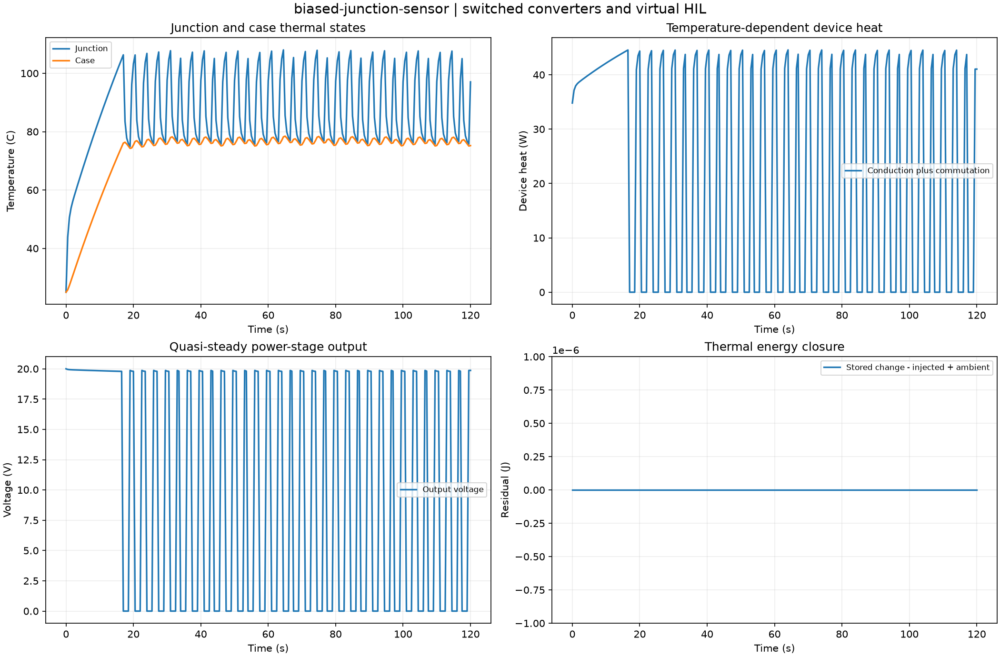

Reproducible switched converters and virtual HIL. Units and field components are printed on the scientific axes. peak d-q quantities use exp(+i omega t); terminal currents point into the protected line.
Sealed numeric archive | Summary CSV | Physical parameters | Run request | Source and environment

| final_junction_c | 97.05239619136333 |
|---|---|
| max_thermal_energy_residual_j | 8.044231947224034e-12 |
| peak_junction_c | 108.00410967080484 |
| shutdown_samples | 124 |
These are simulations, not hardware measurements. Network-model, measurement, timing and statistical uncertainty require distinct convergence checks. Singular or unilluminated data use explicit masks.
Source revision: e37760b740c42b9052fd24c1a442a5d305f0001f.
Dirty checkout: False.
Configuration SHA-256: 786356197f0145a3526f65bbd30b48174fb40451c6da7758a60771cb8c1d7faa.
Replay preserves original source and parameter provenance. SHA-256 manifests detect changed bytes; they are unsigned integrity records, not certificates of physical validity.